R绘图 中级绘图
要点: 展示双变量间关系（二元关系）和多变量间关系（多元关系）:
散点图和散点图矩阵，折线图，相关图，马赛克图。[R In Action Chapter11]
R作图的目的：更好地理解数据，并能够与他人沟通这些理解方式。
#散点图-添加最佳拟合曲线
attach(mtcars)
plot(wt,mpg, pch=19,
main="Basic Scatter plot of MPG vs. Weight",
xlab="Car Weight(lbs/1000)",
ylab="Miles per Gallon")
abline(lm(mpg~wt),col="red",lwd=2,lty=1) #拟合线性直线
#Scatter Plot Smoothing
lines(lowess(wt,mpg),col="blue",lwd=2,lty=2) #平滑曲线:基于局部加权多项式回归的非参数拟合
#R的另一种拟合（没展示）：Local Polynomial Regression Fitting
#loess()是基于lowess表达式版本的更新和更强大的拟合函数
cars.lo=loess(mpg~wt)
mpg.lo=predict(cars.lo, wt, se = TRUE)
lines(wt,mpg.lo$fit,col="green",lwd=1,lty=2)
detach(mtcars)
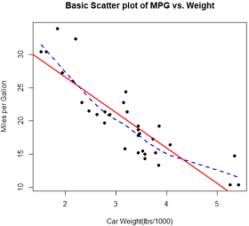
car包中的scatterplot()函数增强了散点图的许多功能，绘制散点图，并能添加拟合曲线、边界箱线图和置信椭圆，还可以按子集绘图和交互式地识别点。
#install.packages("car")
library(car)
par(oma=c(0.1,0.1,0,0))
scatterplot(mpg~wt|cyl,data=mtcars,lwd=2,
#legend.plot=T,
#id.method="identify",#好像没啥用？
#labels=row.names(mtcars), #报错，没有at
boxplots="xy",#在x和y轴画boxplot
main="Scatter Plot of MPG vs. Weight by # Cylinders",
xlab="Weight of Car(lbs/1000)",
ylab="Miles Per Gallon")
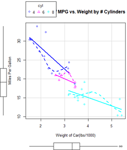
R中至少有四种创建散点图矩阵的实用函数。pairs()函数可以创建基础的散点图矩阵。
#散点图矩阵
#left
pairs(~mpg+disp+drat+wt, data=mtcars,main="Basic Scatter Plot Matrix")
#right 上三角和下三角信息是重复的，upper.panel = NULL将只生成下三角
pairs(~mpg+disp+drat+wt, data=mtcars,
upper.panel = NULL,
main="Basic Scatter Plot Matrix")
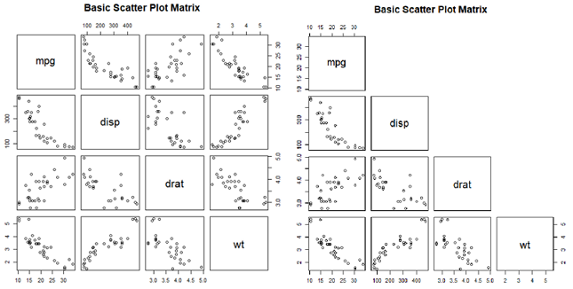
car包中的scatterplotMatrix()函数也可以生成散点图矩阵，并有如下特性：
- 以某个因子为条件绘制散点图矩阵；
- 包含线性和平滑拟合曲线；
- 在主对角线放置箱线图、密度图或者直方图；
- 在各单元格的边界添加轴须图。
library(car)
scatterplotMatrix(~mpg+disp+drat+wt, data=mtcars,
#spread = FALSE选项表示不添加展示分散度和对称信息的直线
#lty.smooth =2设定平滑（loess）拟合曲线使用虚线而不是实线
smooth=list(lty.smooth=2, spread=F),
main="Scatter Plot Matrix via car Package(spread=F)")
#线性和平滑（loess）拟合曲线被默认添加。主对角线处添加了核密度曲线和轴须图。
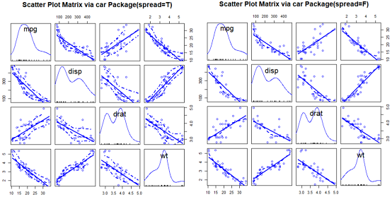
library(car)
scatterplotMatrix(~mpg+disp+drat+wt|cyl, data=mtcars,
smooth=list(spread=F),
by.groups=T, #F则总体拟合，T(默认)则分组拟合曲线
diagonal=list(method="histogram"), #对角线放直方图
main="Scatter Plot Matrix via car Package")
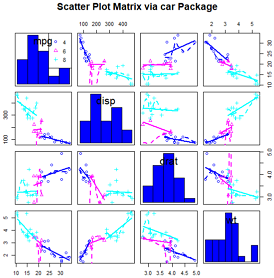
它含有可以重排矩阵中变量位置的选项，可以让相关性更高的变量更靠近主对角线。该函数还能对各单元格进行颜色编码来展示变量间的相关性大小。
#求相关性
cor(mtcars[c("mpg","wt","disp","drat")])
#可见，相关性最高的是车重wt和排量disp的0.89，以及车重wt和每加仑英里数mpg的-0.0.87.
#相关性最低（0.68）的是每加仑英里（mpg）与后轴比（drat）
#install.packages("gclus")
library(gclus)
mydata=mtcars[c(1,3,5,6)] #获取部分变量
head(mydata)
mydata.corr=abs(cor(mydata)) #计算相关系数的绝对值
mycolors=dmat.color(mydata.corr) #给定对称矩阵(本文是相关系数矩阵)，返回颜色矩阵
myorder=order.single(mydata.corr) #对变量排序，使相似的对象更为靠近
cpairs(mydata,myorder, #变量顺序
panel.colors=mycolors, #颜色表
gap=0.5, #单元格间隔
main="Variables ordered and Colored by Correlation")
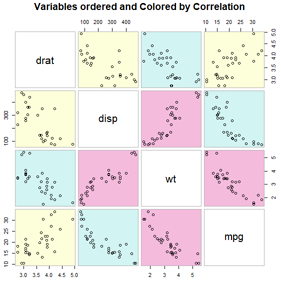
红色相关性最好，距离主对角线最近；黄色相关性最差，距离主对角线最远。
当变量数众多，变量间的相关性变化很大时，适合使用该方法。
set.seed(1234)
n=1e4
c1=matrix(rnorm(n,mean=0,sd=0.5), ncol=2)
c2=matrix(rnorm(n,mean=3,sd=2), ncol=2)
mydata=rbind(c1,c2)
mydata=as.data.frame(mydata)
names(mydata)=c("x", "y")
#1 重叠很严重，无法识别密度最大的区域
plot(mydata$x,mydata$y,pch=19, main="1 Scatter Plot with 10,000 Observations")
#写成with形式
with(mydata,
plot(x,y,pch=19))
#使用封箱、颜色和透明度来指明图中任意点上重叠点的数目
#2
with(mydata,
smoothScatter(x,y, main="2 Scatterplot Colored by Smoothed Densities"))
#3 hexbin包中的hexbin()函数将二元变量的封箱放到六边形单元格中
library(hexbin)
with(mydata,{
bin=hexbin(x,y,xbins=50)
plot(bin, main="3 Hexagonal Binning with 10,000 Observations")})
#4 IDPmisc包中的iplot()函数也可通过颜色来展示点的密度
#install.packages("IDPmisc")
library(IDPmisc)
with(mydata,
iplot(x,y,main="4 Image Scatter Plot with Color Indicating Density"))
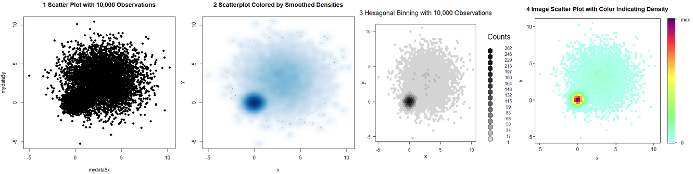
#scatterplot3d中的scatterplot3d()函数来绘制三个向量之间的关系。
#install.packages("scatterplot3d")
library(scatterplot3d)
attach(mtcars)
#1
scatterplot3d(wt,disp,mpg,main="Basic 3D Scatter Plot")
#2 还可设置图形符号、轴、颜色、线条、网格线、突出显示和角度等功能。
scatterplot3d(wt,disp,mpg,pch=16,
highlight.3d=T,type="h",
main="3D Scatter Plot with Vertical Lines")
#3 添加回归面
s3d=scatterplot3d(wt,disp,mpg,pch=16,
highlight.3d=T,type="h",
main="3D Scatter Plot with Vertical Lines and Regression Plane")
fit=lm(mpg~wt+disp) #多元回归方程，通过wt和disp预测mpg
s3d$plane3d(fit)
#平面代表预测值，点代表实际值。点到平面的垂直距离表示残差值。
#点在平面之上则表明它的预测值被低估了，点在平面之下则表明它的预测值被高估了。
detach(mtcars)

attach(mtcars)
#1
# install.packages("rgl")
library(rgl)
plot3d(wt,disp,mpg,col="red",size=5)
#可以通过鼠标旋转该图
#2
#install.packages("Rcmdr")
library(Rcmdr)
scatter3d(wt,disp,mpg) #也可旋转，但是没有坐标轴
#scatter3d()函数可包含各种回归曲面，比如线性、二次、平滑和附加等类型。
#图形默认添加线性平面。help(scatter3d)
detach(mtcars)
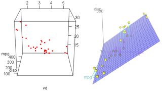
先创建一个二维散点图，然后用点的大小来代表第三个变量的值。这便是气泡图（bubble plot）
symbols(x, y, circle=radius) #可以在指定的(x, y)坐标上绘制圆圈图、方形图、星形图、温度计图和箱线图。
想用面积而不是半径表示第三个变量，可以使用公式换算circle=sqrt(z/pi), z是要绘制的第三个变量。
#气泡图
attach(mtcars)
r=sqrt(disp/pi)
symbols(wt,mpg,circle=r,inches=0.3, #inches默认为1，控制着最大圆圈的大小
fg="white", bg="lightblue",
main="Bubble Plot with point size proportional to displacement",
ylab="Miles per Gallon",
xlab="Weight of Car(lbs/1000)")
text(wt, mpg, rownames(mtcars),cex=0.5)
detach(mtcars)
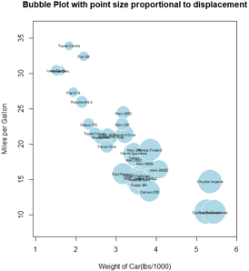
图中可见，随着每加仑汽油所行驶里程的增加，车重和发动机排量都逐渐减少。
相比对长度的判断，人们对体积/面积的判断通常更困难。所以，饼图和气泡图在统计人员中避免使用，而商业中很常用。
把散点图从左到右连接起来，就得到折线图。可以刻画变动。
opar=par(no.readonly=T)
par(mfrow=c(1,2))
t1=subset(Orange, Tree==1)
plot(t1$age, t1$circumference,
xlab="Age (days)",
ylab="circumference (mm)",
main="Orange Tree 1 Growth")
plot(t1$age, t1$circumference,
xlab="Age (days)",
ylab="circumference (mm)",
main="Orange Tree 1 Growth",
type="b")
par(opar)
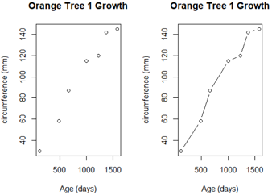
折线图使用plot(x,y,type=)或lines(x,y,type=)创建。其中，type可选值：
| 类 型 | 图形外观 |
|---|
| p | 只有点 |
| l | 只有线 |
| o | 实心点和线（即线覆盖在点上） |
| b、c | 线连接点（c时不绘制点） |
| s、S | 阶梯线 |
| h | 直方图式的垂直线 |
| n | 不生成任何点和线（通常用来为后面的命令创建坐标轴） |
opar=par(no.readonly=T)
par(mfrow=c(2,4))
d=seq(1,5)**2;d
draw=function(type,data=d){
plot(data,type=type,col="red",
main=paste0("type='",type,"'"))
}
for(i in c("p",'l','o','b','c','s','S','h')){
draw(i)
}
par(opar)
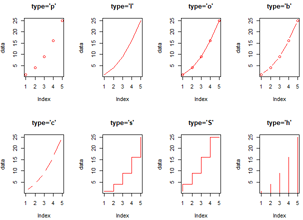
以mtcars数据框中的变量相关性为例，它含有11个变量，对每个变量都测量了32辆汽车。
options(digits=2) #保留2位有效数字
cor(mtcars)
#数值矩阵不好看明白。
#用corrgram包中的corrgram()函数，可以以图形方式展示该相关系数矩阵
#
#install.packages("corrgram")
library(corrgram)
corrgram(mtcars, order=T, #最相关的排到最中间，使用组成分法排序
lower.panel=panel.shade, #下三角：阴影图
upper.panel=panel.pie, #上三角：饼图
text.panel=panel.txt,
#而text.panel和diag.panel选项控制着主对角线元素类型。
main="Correlogram of mtcars intercorrelations")
#
##下三角
#默认地，蓝色和从左下指向右上的斜杠表示单元格中的两个变量呈正相关。
#反过来，红色和从左上指向右下的斜杠表示变量呈负相关。
#色彩越深，饱和度越高，说明变量相关性越大。
#相关性接近于0的单元格基本无色
#
##上三角
#饼图，颜色同上。
#相关性由填充面积展示。正相关则从12点钟处开始顺时针填充饼图，而负相关性则逆时针方向填充饼图。
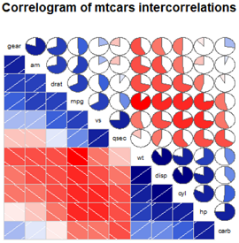
从图中含阴影的单元格中可以看到，gear、am、drat和mpg相互间呈正相关，wt、disp、hp和carb相互间也呈正相关。但第一组变量与第二组变量呈负相关。你还可以看到carb和am、vs和gear、vs和am以及drat和qsec四组变量间的相关性很弱。
表X corrgram()函数的panel选项
| 位 置 | 面板选项 | 描 述 |
|---|
| 非对角线 | panel.pie
panel.shade
panel.ellipse
panel.pts | 用饼图的填充比例来表示相关性大小用阴影的深度来表示相关性大
小绘制置信椭圆和平滑拟合曲线绘制散点图 |
| 主对角线 | panel.minmax
panel.txt | 输出变量的最大最小值输出的变量名字 |
library(corrgram)
corrgram(mtcars,order=T, #矩阵的行和列利用主成分分析法进行了重排序
lower.panel=panel.ellipse, #下三角区域使用平滑拟合曲线和置信椭圆
upper.panel=panel.pts, #上三角区域使用散点图
text.panel=panel.txt,
diag.panel = panel.minmax, #主对角面板包含变量最小和最大值。
main="Correlogram of mtcars data\n using scatter plots and ellipses")
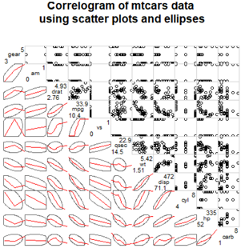
为何散点图看起来怪怪的？绘制的散点图限制了一些变量的可用值。例如，挡位数须取3、4或5，气缸数须取4、6或者8。am（传动类型）和vs（V/S）都是二值型。因此上三角区域的散点图看起来很奇怪。
library(corrgram)
#1
corrgram(mtcars,order=T,
lower.panel=panel.shade, #下三角,颜色深浅代表相关系数大小,线条方向代表正负
upper.panel=NULL, #不要上三角
text.panel=panel.txt,
#diag.panel = panel.minmax,
main="Car Mileage Data (sorted)")
#2 可以在自定义函数col.corrgram2()中用colorRampPallette()函数来指定四种颜色
col.corrgram2=function(ncol=10){
colorRampPalette(c("red","burlywood1","darkkhaki","darkgreen"))(ncol)
}
corrgram(mtcars,order=T,
lower.panel=panel.shade,
upper.panel=panel.pie,
text.panel=panel.txt,
#col.regions =col.corrgram2, #或者
col.regions =colorRampPalette(c("darkgoldenrod4",
"burlywood1","darkkhaki","darkgreen")),
main="A Corrgram(or Horse) of a Different Color")
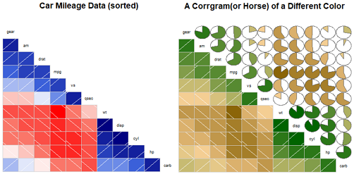
相关系数图是检验定量变量中众多二元关系的一种有效方式。由于图形相对比较新颖，因此教会目标读者看懂图形将是最大的挑战。
想了解相关图的更多内容，可参考Michael Friendly的文章“Corrgrams: Exploratory Displays for
Correlation Matrices”（下载网址为 http://www.math.yorku.ca/SCS/Papers/corrgram.pdf）。
cd包中的mosaic()函数可以绘制马赛克图。（R基础安装中的mosaicplot()也可绘制马赛克图，但vcd包具有更多扩展功能。
以基础安装中的Titanic数据集为例，它包含存活或者死亡的乘客数、乘客的船舱等级（一等、二等、三等和船员）、性别（男性、女性），以及年龄层（儿童、成人）。这是一个被充分研究过的数据集。
mosaic(table) #table是数组形式的列联表。也可以：
mosaic(formula, data=) #其中formula是标准的R表达式，data设定一个数据框或者表格。
添加选项shade = TRUE将根据拟合模型的皮尔逊残差值对图形上色，
添加选项legend = TRUE将展示残差的图例。
#马赛克图
#查看分类细节
ftable(Titanic)
# Survived No Yes
#Class Sex Age
#1st Male Child 0 5
# Adult 118 57
# Female Child 0 1
# Adult 4 140
#2nd Male Child 0 11
# Adult 154 14
# Female Child 0 13
# Adult 13 80
#3rd Male Child 35 13
# Adult 387 75
# Female Child 17 14
# Adult 89 76
#Crew Male Child 0 0
# Adult 670 192
# Female Child 0 0
# Adult 3 20
library(vcd)
mosaic(~Class+Sex+Age+Survived, data=Titanic,
shade=T, legend=T)
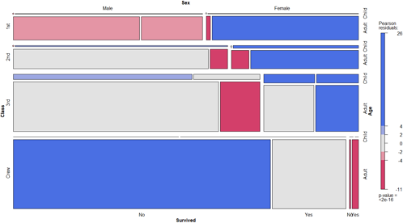
马赛克图隐含着大量的数据信息。例如：
(1)从船员到头等舱，存活率陡然提高；
(2)大部分孩子都处在三等舱和二等舱中；
(3)在头等舱中的大部分女性都存活了下来，而三等舱中仅有一半女性存活；
(4)船员中女性很少，导致该组的Survived标签重叠（图底部的No和Yes）。
继续观察，你将发现更多有趣的信息。关注矩形的相对宽度和高度，你还能发现那晚其他什么秘密吗？